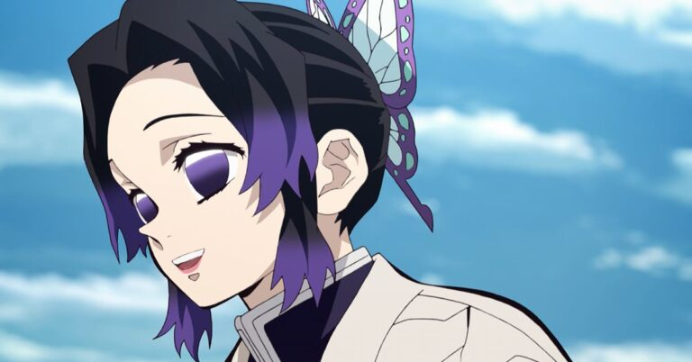
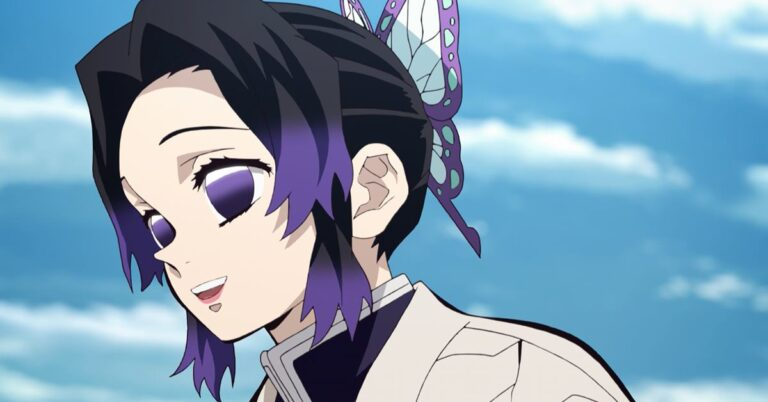
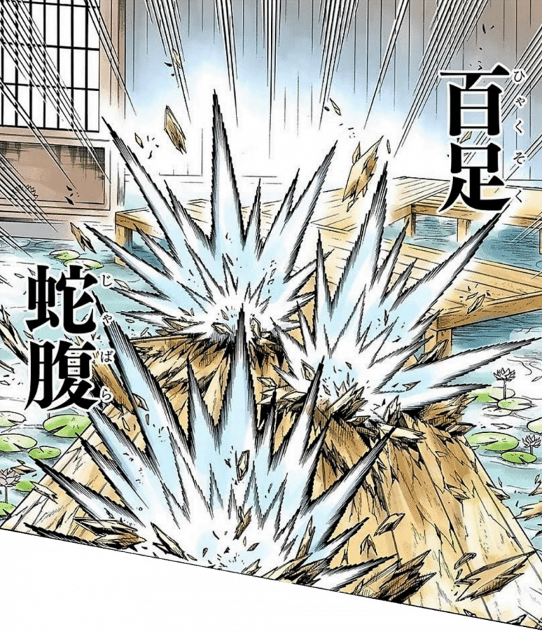
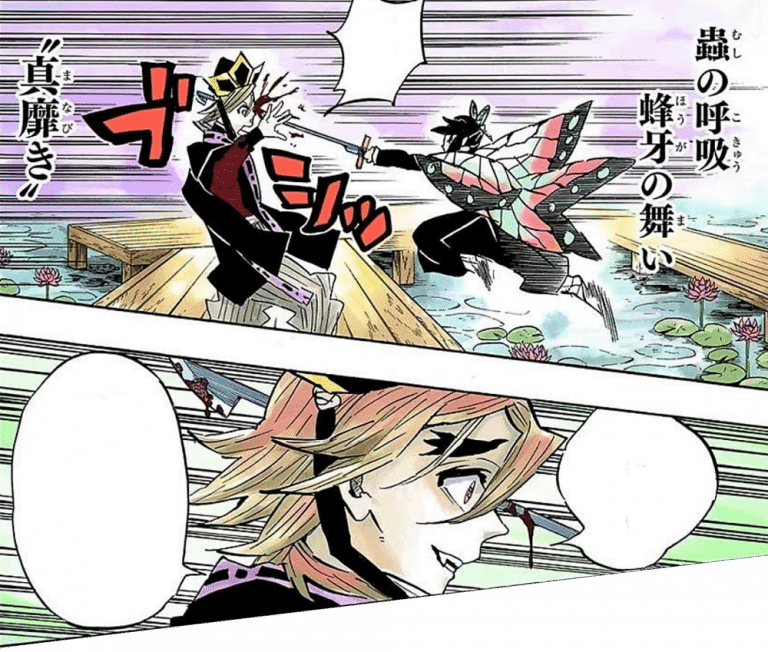
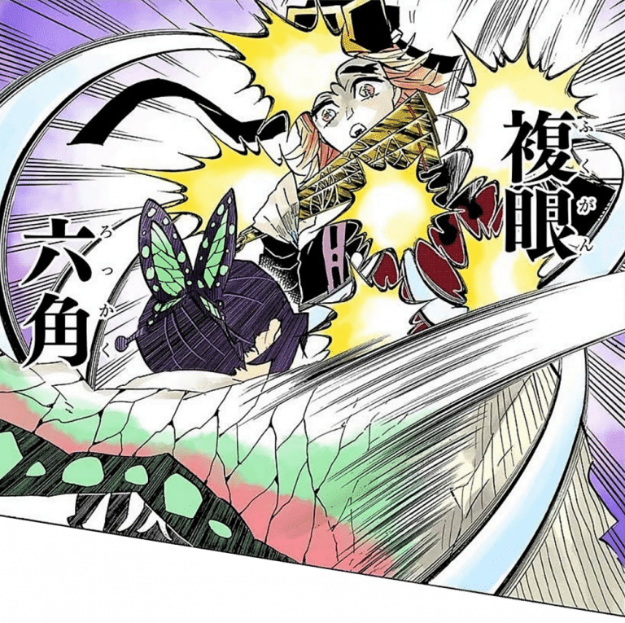

Shinobu Kocho
História
Shinobu Kocho nasceu em uma família comum com seu pai, sua mãe e sua irmã mais velha “Kanae Kocho”.
De acordo com Shinobu sua família era muito feliz e amigável, mas tudo foi destruído graças a um oni.
Durante esse ataque os pais de Shinobu foram mortos e o destino dela e de sua irmã parecia que seria o
mesmo, porém o pilar da pedra “Gyomei Himejima” chegou a tempo e salvou as duas irmãs.
Agora salvas, Shinobu e Kanae tomaram a decisão de que jamais deixariam acontecer o que aconteceu com
elas com outras família e começaram a treinar para serem mais fortes.
Juntas ambas entraram para a organização de caçadores algum tempo depois.
A Kanae chegou ao rank hashira assumindo cargo de pilar da flor e a Shinobu chegou ao rank Kinoe e ficou
como Tsuguko da Kanae.
Algum tempo depois, Shinobu e Kanae adotaram Kanao Tsuyuri como sua irmã, basicamente elas encontraram a
Kanao quando ela era uma escrava e depois de uma curta conversa a Shinobu puxou a Kanao e jogou dinheiro
pra cima, com a desculpa de que aquilo pagaria o homem pela Kanao.
Shinobu e a Kanae levaram a pequena Kanao direto para a mansão da borboleta, onde passaram a cuidar dela
e também começaram à ajudar a superar os traumas que ela tinha em sua mente, como o fato de não
conseguir tomar atitudes sozinha.
Kanae Kocho durante uma de suas missões como pilar enfrentou o lua superior 2 “Douma” e acabou morta
durante o combate.
Conforme o sol nascia Shinobu chegou ao local a tempo de ouvir as últimas palavras de sua irmã.
De primeira Kanae pediu para a Shinobu deixar a organização de caçadores, mas com a insistência de
Shinobu, Kanae abriu o jogo e deu informações sobre o Douma para que ela conseguisse sua vingança no
futuro.
A partir daqui, Shinobu passou a ter um ódio fervente dentro de si e começou a pensar e planejar como
faria a sua vingança.


habilidades

Shinobu seguiu seu caminho entre os Hashiras. Ao desenvolver a variação da Respiração da Água e da Flor, a Respiração do Inseto, Shinobu conseguiu balancear sua falta de força e basear seu estilo em velocidade para aumentar o poder de impacto.
Respiração do Insetos
Shinobu Kochou foi a única Hashira e personagem na obra a apresentar esta tal respiração, que ela mesma
desenvolveu por um motivo: sua força física. Kochou possui uma força física muito baixa, diferente de
seu parceiro, Tomioka Giyuu, ou até mesmo o Hashira mais novo, Muichiro Tokito. Então, para a garota
superar essa desvantagem, ela criou sua forma de respiração, chamada Respiração dos Insetos, que
misturou seu conhecimento por medicina e agilidade para criar esta derivação, possuindo a capacidade de
não cortar e sim perfurar os corpos dos demônios para injetar venenos letais com a base de glicínia. Ela
conseguiu criar quatro danças com sua respiração, Shinobu escolheu não colocar "formas", mas sim
"danças" no começo dos nomes de suas técnicas. A respiração do Insetos é uma derivação da Respiração da
Água, assim como muitas outras respirações que são derivadas.
Dança da Abelha: Vibração verdadeira (Hōga no mai: Manabiki)

Shinobu Kochou apenas corre na direção do oponente usando de sua velocidade e agilidade, os
quais ela possui bastante, enquanto se movimenta como uma linda borboleta, finalizando com
um último impulso na corrida, conseguindo conectar um golpe e injetar rapidamente o veneno
usando a ponta da katana, sendo prática para penetrar e fazer o veneno percorrer facilmente
no corpo do demônio para o matar rapidamente.
Seireii no mai: Fukugan rokkaku

Shinobu Kochou não dá somente um ataque, e sim seis ataques seguidos para injetar altas
doses de veneno, assim conseguindo realizar o ato de fazer o inimigo diminuir sua defesa,
tendo o objetivo claro de aplicar jatos mortais de veneno nos pontos fracos do corpo do
demônio para que ele tenha uma morte mais rápida e eficaz.
Gokō no mai: Hyakusoku jabara

O usuário faz alguns movimentos em zigue-zague antes do ataque, fazendo com o que a garota
(Shinobu Kochou) consiga ganhar mais velocidade em seu ataque e, o mais incrível, é que ela
consegue confundir o demônio, assim deixando ele (ou ela) sem saber de onde o ataque iria
vir, seja pela direita ou esquerda. Quando o golpe conecta, o veneno é injetado e preciso,
assim sendo atingido de forma rápida e forte.
Chō no mai: Tawamure
Shinobu consegue realizar vários cortes no corpo do demônio, assim fazendo com que o veneno
possa ser injetado e funcione perfeitamente depois de alguns segundos. Essa dança cria uma
"ilusão", fazendo parecer com que borboletas de várias tonalidades de roxo estivessem
atacando o oni, com isso, ao acontecer as perfurações, o veneno consegue fazer com o que o
corpo comece a paralisar e os órgãos pararem de funcionar aos poucos.